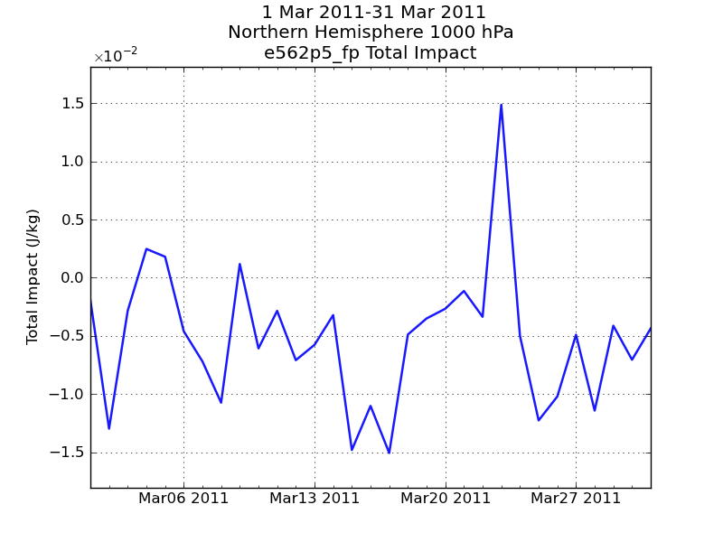
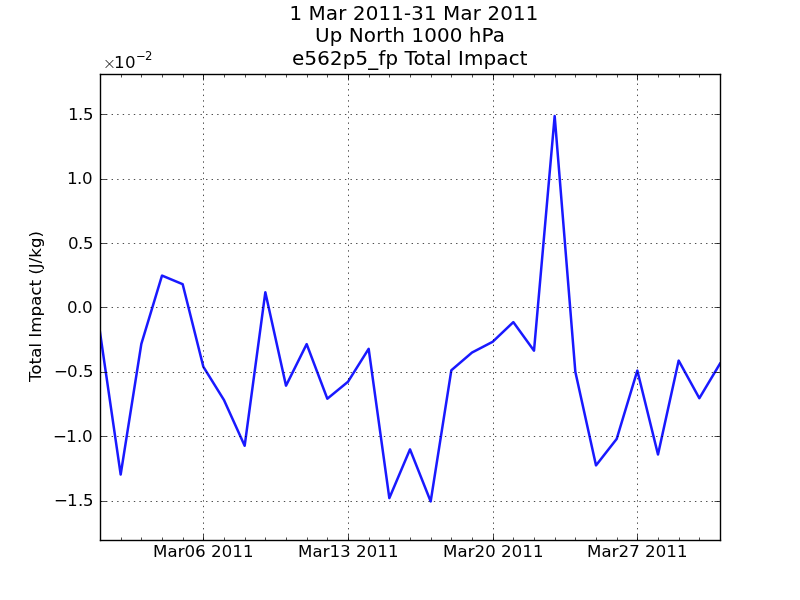

Configuring SemperPy¶
SemperPy is distributed with configuration files (let call them system files) which are suited for GMAO in the general case. Under the main configuration directory (you can obtain its location by issuing the command spy_doc config) there are different directories for different components of SemperPy.
In most cases, the user of the SemperPy applications can customize the standard configuration. In order to do so, the user needs to create a configuration directory and tell SemperPy to take it into account by issuing the command (shell dependent):
setenv SEMPERPY_CONFIG /my/path/to/my/configuration/directory:$SEMPERPY_CONFIG or export SEMPERPY_CONFIG=/my/path/to/my/configuration/directory:$SEMPERPY_CONFIGThen, the subdirectory for the component you want to customize needs to be created, containing a file with the same name as the system file. To clarify the mechanism, let’s customize the data in plot titles and the “pretty” version of different keywords.
Titles¶
Let’s start with example1 in Observation statistic - plotting:
from gmaopy.modules.obsplot import * document( plotdata = obsdata( type = 'im', database = 'im_ops', variable = 'xvec', domain = 'n.hem', expver = 'e562p5_fp', level = 1000, statistic = 'impact_per_anl', date = Dates(2011030100,2011033100,24), ), plot = timeseriesplot( curve = line( plotdata = obsdata( # RaobDsnd kx = [120,220,221,132,229,232], kt = [4,5,11,44], ) ) ), # we want to generate a file, interactive = True would open a window interactive = False, output = 'example1.png' )This script produces:

For the sake of this example, let’s assume that we would like to change the title, by removing the first line and putting the experiment ID on the last line. In our main configuration directory, we create a directory called plot and we create a file called obstitles.def (you will have checked the system file first to find out that information) with the following contents:
[timeseriesplot] title = <date_interval>,<domain_name> <level>,<name>,<expver> <statistic>In the title template, the text beetwen comas is a line of the title (please refer to Observation statistic - plotting. When running the script again, we obtain:

note: If you look at Observation statistic - plotting you will see that you can do this in the plot directive itself. The difference here is that the change you made by customizing the title file will apply to all timeseriesplot directives you use.
{kind=link}
Text substitution (beautify)¶
SemperPy has a beautifying system. The contents of keywords is converted to more presentable text using a beautifier and a configuration file. This configuration file can also be customized. Beautifying occurs in different contexts, for example in a title or in a legend where we tend to keep the text short (abbreviated) for each context the value of a keyword is given a more intelligible value. The domain name n.hem is short for Northern Hemisphere, let’s redefine it to become Up North.
Let’s create a directory called main and a file called beauty.def. Looking at the original system file beauty.def we find that n.hem appears twice, once in the [title] section and once in the [abbreviated] section, let’s replace both:
[title] n.hem = Up North [abbreviated] n.hem = Up Northand let’s run the script again:

Now the text is replaced with what we wrote in the configuration file.
note: The only way to modify the way the beautifying process work is to customize the configuration file, there is no facility at script level.
{kind=link}
Custom observations and observation files¶
In order to handle observation sources and types properly, SemperPy uses a cross reference of all the data which was generated once by mining observation files in the archive and now updated manually.
This file contains 5 different sections for observation data, here is a small sample:
[kx] 4 = 88 16 = 40 17 = 40 18 = 40 [kt] 4 = 220,221,223,224,228,230,231,232,233,234,235,242,243,245,246,250,251,252,253,254,257,258,259,280,281,282,284,287,289,290 5 = 220,221,223,224,228,230,231,232,233,234,235,242,243,245,246,250,251,252,253,254,257,258,259,280,281,282,284,287,289,290 11 = 120,132,133,134,180,181,182,183,187 [files] 00004-00088 = conv 00016-00040 = hirs3_n16 00017-00040 = hirs3_n17 [levels] 00000-00000 = 5.0,7.0,10.0,20.0,30.0,50.0,70.0,100.0,150.0,200.0,250.0,300.0,400.0,500.0,700.0,850.0,925.0,1000.0 00004-00088 = 0.24,0.5,1.0,2.0,4.0,5.0,7.0,10.0,20.0,30.0,50.0,70.0,100.0,150.0,200.0,250.0,300.0,400.0,500.0,700.0,850.0,925.0,1000.0 00016-00040 = 1,2,3,4,5,6,7,8,9,10,11,12,13,14,15,16,17,18,19 00017-00040 = 1,2,3,4,5,6,7,8,9,10,11,12,13,14,15,16,17,18,19 00018-00040 = 1,2,3,4,5,6,7,8,9,10,11,12,13,14,15,16,17,18,19 [leveltypes] 00000-00000 = pl 00004-00088 = pl 00016-00040 = ch 00120-00033 = sfc 00120-00039 = sfcEach section needs to contain information about observations:
- kx: for each kx all existing kt’s.
- kt: for each kt all existing kx’s.
- files: the name of the collection (file) which contains a particular kx-kt combination (e.g. conv, hirs4_n18, amsua_aqua etc...)
- levels: all the possible levels or channels for that particular kx-kt combination. If it is standard pressure levels or surface, there is no need to specify it.
- leveltypes: the type of level for that particular kx-kt combination. the possible values are “pl” for pressure level, “sfc” for surface, “ch” for channel, “depth” for ocean levels and “wl” for wavelength (aerosols).
Whenever a new observation source (or type) goes into operations, the administrator of SemperPy is expected to update the cross reference systemwide. If you define a new kx or kt within the context of an experiment, you can create your own configuration file with relevant information. All you need to do is define ods/xref.def in the main configuration directory and write a file with at least four of the five sections (levels can be optional).
As an example, within the context of a study on buoys, some ODS files were created with kx=180, kt=33 and kx=280 and kt=4,5 as the observation type without any buoys and kx=562, kt=33,4,5 for buoy only observations. In order to define the observation for computing statistics, the following file was created:
[kx] 562 = 33,4,5 [kt] 4 = 220,221,223,224,228,230,231,232,233,234,235,242,243,245,246,250,251,252,253,254,257,258,259,280,281,282,284,287,289,290,562 5 = 220,221,223,224,228,230,231,232,233,234,235,242,243,245,246,250,251,252,253,254,257,258,259,280,281,282,284,287,289,290,562 33 = 120,132,180,181,182,183,187,562 [files] 00280-00004 = shp 00280-00005 = shp 00180-00033 = shp 00562-00004 = shp 00562-00005 = shp 00562-00033 = shp [levels] 00562-00004 = 0 00562-00005 = 0 00562-00033 = 0 [leveltypes] 00562-00004 = sfc 00562-00005 = sfc 00562-00033 = sfcPlease note that the files were named:
e572p2_fp.imp3_txe_shp.DATE.odsThis is why the [files] section had to be defined. In order to compute statistics, the following directive was issued:
from gmaopy.modules.obsstat import * obsstat( date = Dates(2012010100,2012013100,24), domain = ['global','n.hem','s.hem','tropics'], stats = ['sum','beneficial'], type = 'im', expver = 'e572p2_fp', ignore_missing_files = False, database = 'ops', source = 'oper', root_tmpl = '/path/to/where/the/files/are', tree_tmpl = '', file_tmpl = '<expver>.imp3_txe_<collection>.date(@Y@m@d_@Hz).ods', archive_type = 'filesystem', obs = [ observation( filename = ['impact.def'], variable = 'xvec', ), ], )The file specifying which observations to compute was impact.def:
[no_buoys] kx = 180,280 kt = 4,5,33 [buoys] kx = 562 kt = 4,5,33In order to run the compute directive, the environment variable SEMPERPY_CONFIG needed to be defined to point to where the directory was.